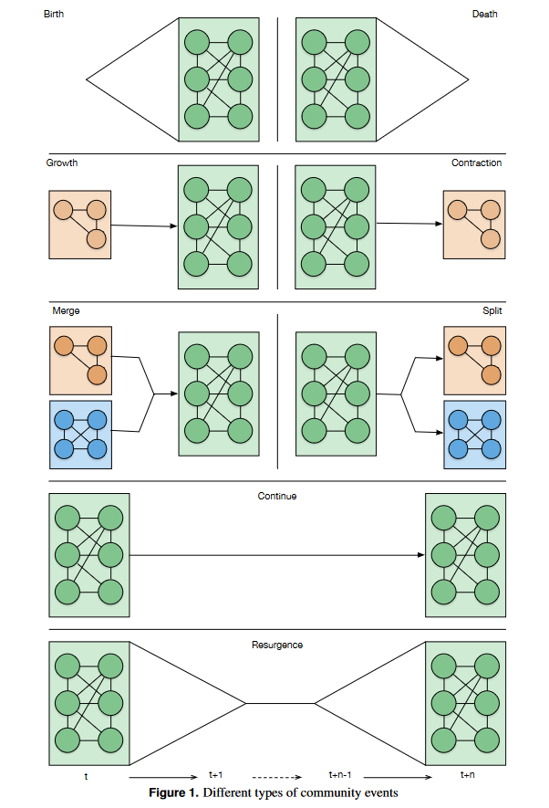

9 Analyser la dynamique des réseaux
La démarche la plus fréquente consiste à analyser un réseau donné à une date donnée : le nombre de sommets est stable, les relations sont présentes ou absentes mais également stables. Le temps souvent long nécessaire pour recueillir des données relationnelles à l’aide d’entretiens, de questionnaires ou d’observations (ou un mélange des trois) peut expliquer l’aspect “arrêt sur image” de nombres d’articles. Il existe certes des exemples de données sociologiques temporelles (cf les articles de Bidart sur le panel de Caen, l’étude du club de karaté par Zachary ou les relations entre moines étudiées par Sampson 1) mais si l’on donne sans cesse les mêmes exemples, ce n’est pas par hasard.
La situation a changé suite au développement des outils numériques en ligne : il est désormais théoriquement possible de générer des réseaux dynamiques 2 au sein d’une population donnée. Qu’il s’agisse de Facebook (pour les moins jeunes), de Twitter ou d’Instagram, il est en théorie possible de choisir une méthode (réseau complet ou réseau personnel), une population et d’étudier l’évolution de ce ou ces réseaux (création et suppression de liens et de sommets). D’autres dispositifs (puces RFID notamment) ont également été utilisés pour enregistrer les interactions au sein d’un groupe sur une période donnée.
Exemple : le projet SocioPatterns a permis la construction de plusieurs jeux de données relationnelles dynamiques. La collecte s’est faite à l’aide de puces RFID portées par les enquêtées durant un temps plus ou moins long. Toutes les 20 secondes, une trace numérique permet d’identifier les personnes situées face à face à 1 mètre maximum de distance. La vidéo disponible en ligne concernant les interactions au sein d’une école primaire montre le potentiel d’un tel dispositif.
Dans un premier temps, j’évoque des pistes d’analyse possibles quand le nombre de sommets est stable ; dans un deuxième temps, des pistes possibles quand ce nombre est variable.
9.1 Analyser un réseau dynamique d’ordre V
Lorsque l’étude porte sur une même population de sommets dont on étudie les liens à différents temps \(t\) (\(t_0\), \(t_1\), …, \(t_n\)), la démarche est relativement proche de celle concernant l’étude des réseaux multiplexes. On peut en effet considérer que chaque temps \(t\) correspond à une couche, que le réseau temporel correspond à un réseau multiplexe chronologiquement ordonné et les réseaux de synthèse évoqués précédemment peuvent être créés notamment pour mettre en évidence les liens toujours présents (présence- absence et valuation par le nombre de pas de temps concernés) et toujours absents.
Au moins trois types d’analyse peuvent être menées à bien :
- des analyses à chaque pas de temps ;
- des analyses prenant en compte l’évolution du réseau ;
- des analyses sur le réseau agrégé (topologique ou valué).
Mesurer l’évolution du nombre de composantes, de la densité, du diamètre ou de la distribution des degrés ne pose pas de problème particulier. Pour suivre l’évolution des mesures de centralité, une mesure à chaque temps \(t\), une transformation en rang puis une corrélation des rangs permettent de mettre en évidence la stabilité ou l’instabilité temporelle des hiérarchies au sein du réseau étudié. Il est également possible de proposer des mesures pondérées en fonction de la persistance temporelle. À un niveau plus global, il est possible de corréler les matrices d’adjacence du réseau entre chaque pas de temps \(t\) et \(t + 1\) pour repérer les éventuelles bifurcations 3.
La mesure de la distance topologique couramment utilisée peut être enrichie en prenant en compte une distance temporelle entre sommets : il s’agit de mesurer le nombre de liens et le nombre de pas de temps nécessaires pour joindre deux sommets non voisins au moment \(t\). Un diamètre temporel peut être calculé sur le même principe. Le temps peut également être pris en compte pour mesurer la persistance des liens et des triades fermées.
La détection des communautés dans un réseau dynamique devrait permettre d’identifier les processus à l’œuvre au sein du réseau étudié. La typologie de Cazabet and Rossetti (2019) distingue par exemple les communautés qui apparaissent, grandissent, diminuent, disparaissent, éclatent, fusionnent, se maintiennent et réapparaissent (figure 9.1).

Figure extraite de l’article de Cazabet and Rossetti (2019). Le pas de temps doit être suffisamment fin pour mettre en évidence ce type de dynamiques : une structure identique à \(t\) et à \(t+n\) peut en effet masquer ces différents processus.
9.2 Analyser un réseau dynamique d’ordre variable
Lorsque l’ordre du réseau dynamique est variable, les méthodes d’analyse sont moins normalisées encore. L’avantage est donc qu’il est possible de laisser libre cours à sa créativité ; l’inconvénient est que l’on n’est pas toujours certain de la pertinence de l’approche que l’on propose.
Une des premières étapes pourrait être de mesurer l’instabilité du réseau en étudiant la fréquence et le rythme d’apparition et de disparition des sommets et des liens.
Si le nombre de sommets et de liens ne cesse de croître, il est possible de vérifier si la création des liens suit une logique d’attachement préférentiel à savoir la probabilité des sommets nouveaux à \(t + 1\) à créer des liens avec les sommets centraux au moment \(t\).
Exemple : le panel de Caen est une enquête longitudinale en réseau personnel menée par la sociologue Claire Bidart depuis 1995. Les réseaux personnels qu’elle étudie varie à chaque vague d’enquête : certains se contractent, d’autres se diversifient, d’autres encore se renouvellent fortement. L’un des enjeux de l’analyse est alors de chercher et si possible d’expliquer les déterminants sociaux de ces évolutions très contrastées.
Si le nombre de sommets et de liens peut, selon les cas, varier fortement dans un sens ou dans l’autre, il n’existe pas de modèle statistique simple auquel vous raccrochez, ce qui n’est a priori pas un problème majeur si vous êtes chercheuse en sciences sociales. L’un des enjeux de la recherche sera de mesurer ces variations puis de chercher à les expliquer.
9.3 Pour aller plus loin
Le plus compliqué avec l’étude de réseau dynamique est d’obtenir des données de qualité. Une fois ce petit obstacle franchi, la liste des possibilités est immense et si vous étudiez ce type de réseau, n’hésitez pas à faire preuve d’imagination pour répondre aux questions que vous vous posez. Il est tout à fait possible de produire des résultats intéressants avec des méthodes simples. L’un de mes exemples favoris est l’ouvrage de Bidart et al. (2011), La vie en réseaux : les analyses proposées reposent sur une poignée d’indicateurs basiques mais les données étant riches, les questions de recherche pertinentes, les résultats le sont aussi.
La littérature sur le sujet croît chaque année, avec des niveaux de complexité très variable. Deux ouvrages récents sont utiles pour avoir un aperçu des derniers développements : l’ouvrage de Masuda et Lambiotte, A Guide to Temoral Networks (2e édition, 2020), très utile mais conseillé aux fans d’équations, et l’ouvrage Temporal Network Theory dirigé par Holme et Saramäki, plus hétérogène mais plus accessible que le précédent. Les deux peuvent être trouvés en ligne.
Le jeu de données Sampson est un classique de l’analyse de réseaux sociaux, il montre l’évolution des relations au sein d’un groupe de moines. La thèse intitulée A novitiate in a period of change: An experimental and case study of social relationships, soutenue en 1968, a été éditée en 2002 ; elle est introuvable en ligne et présente dans seulement deux bibliothèques en Europe d’après Google (recherche effectuée le 29 juillet 2022) ; ne l’ayant pas lue, je m’abstiens de la citer. Update : on peut la trouver sur l’indispensable liste Awesome Network Analysis de François Briatte. Mais je ne l’ai toujours pas lue…↩︎
Je considère dans ce chapitre que les expressions “réseau dynamique” et “réseau temporel” sont synonymes. Comme souvent en analyse de réseau, les termes et les significations varient en fonction des autrices.↩︎
Différentes méthodes permettent de mesurer la similarité entre deux matrices de même taille, l’une des plus simples à mettre en œuvre étant la distance de Jaccard (voir la page anglophone de Wikipedia Jaccard index). ↩︎